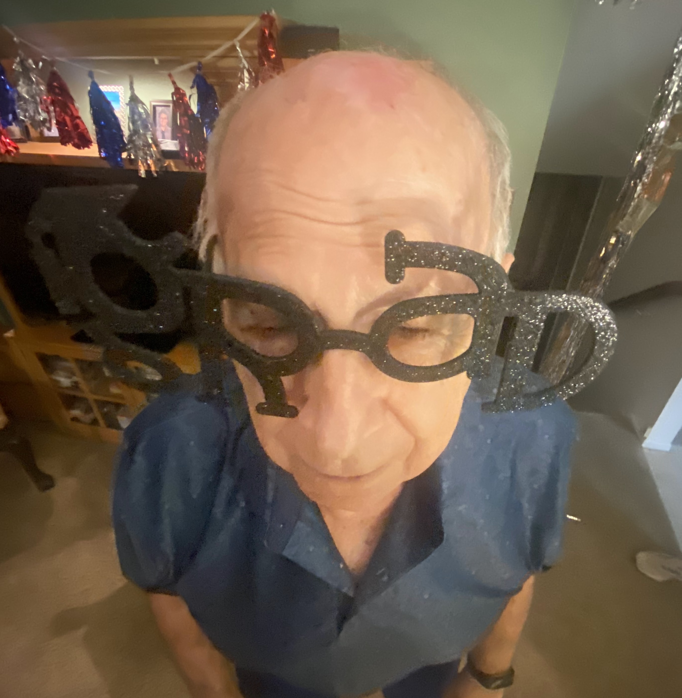
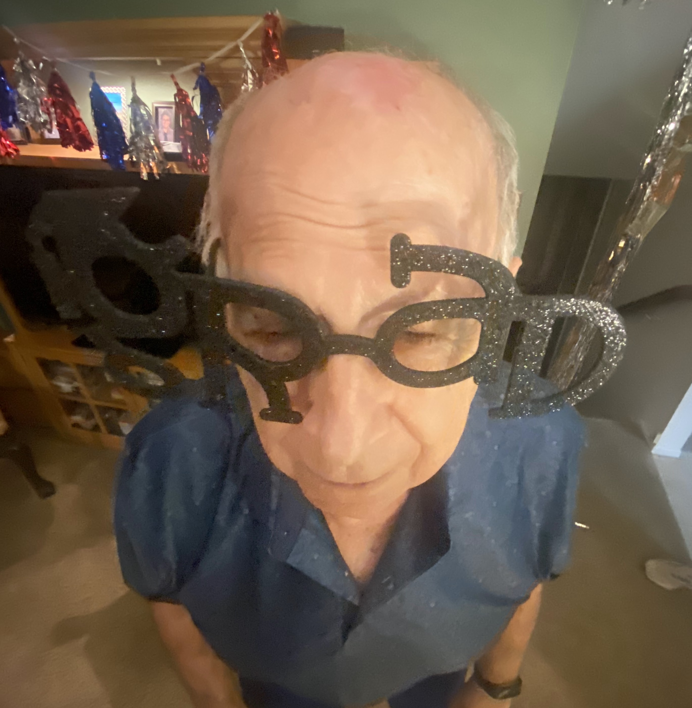
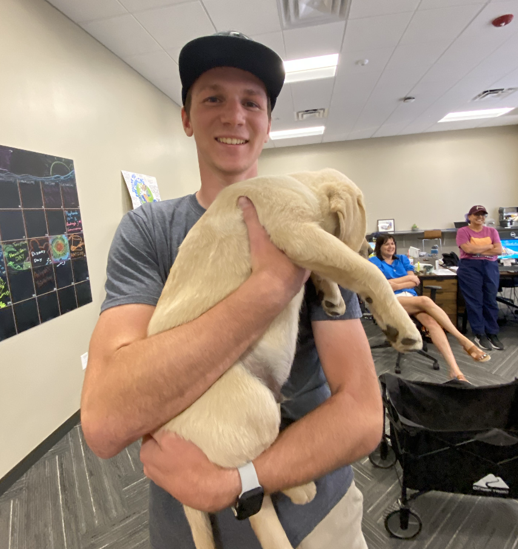
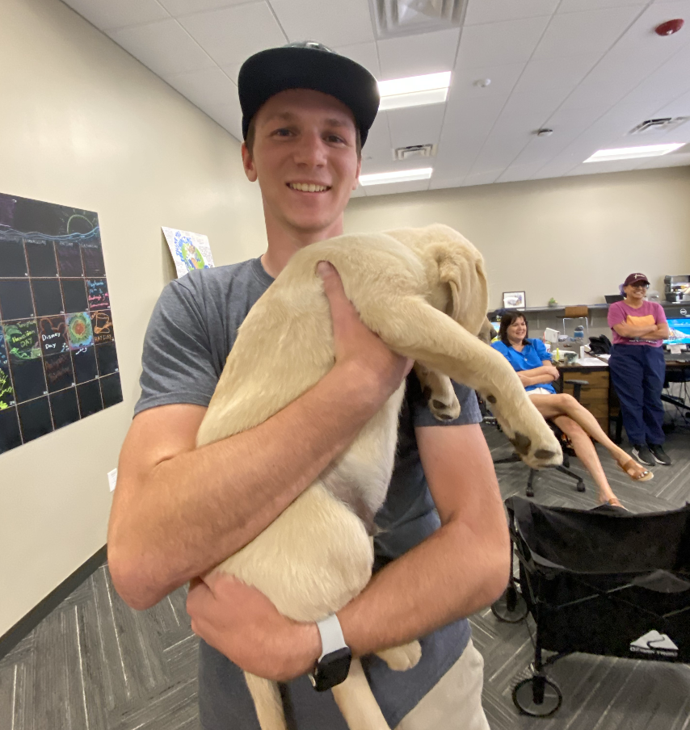

Important/Upcoming Dates
- December 15: Caroline and Caitlynn come home for the holidays
- December 16: Coree graduates from Arizona State
- January 14: Clint and Coree's birthday
- February 16: Papa's birthday
- March 2: Cindy and Clint's anniversary
Photos
 



 

Stories
Dig deeper into the history that is the Palmer Branch of the family!
The First Born Son (as told by Papa)
"They told me you were supposed to be a girl."
When Marietta was pregnant with Clint, the doctors kept teling them that they were pregnant
with a third girl. While John loved his two daughters, he really wanted a son. He prayed and
he prayed and it was answered when they learned that Marietta was pregnant with a boy.
Because Clint was born, the Palmer bloodline continues to his children and only son,
Chrisitian.
Every year on Clint's birthday, Papa loves to tell this story. It never gets old for him
because he finally got his wish of having the son he always wanted. 51 years later, that
wish stays strong.
Your Grandson is Going (Semi) Pro (as told by Christian)
"Guess what, Papa! Guess what, Nana! You're never going to believe it," Christian said as he
sat down across from his grandparents.
Little did Christian know, but Papa had been patrolling the Next Level Instagra page for them
to drop the roster for the new season in hopes of seeing his grandson's name on the list of
players. Papa played along, though, and let Christian reveal the news as dramatically as he
wanted to. With much delight, Christian was able to tell his grandparents that he made it on
to Next Level's UPSL D1 team, which is one team below USL, which is the league right below
the MLS.
Now that he has had time on the team, Christian is excelling and living his best soccer-playing
life. In fact, during the 2024 season, his team made it all the way to the national UPSL
semi-finals before they ended up being eliminated in a tough game in Las Vegas.
End of an Era
Coree started playing softball in third grade and continued to play the sport until the end of
high school. She played in a recreational league, LadyHawks, until sixth grade when she joined
a club team. The first team she played for was the AZ Scorpions before she changed teams and
began playing for AZ Vendetta-Hickman.
Once in high school, she tryed out for the school team, hoping to just make the team. Little did
she know, she would end up making varsity and being the starting right fielder for the team. By
the time it was her senior year, Coree had been on Varsity for four years and was one of the
captains of the team.
Her softball career ended on Senior Night, but she went out with a bang by hitting a home run in
her last at-bat. Watch the video to see the moment!